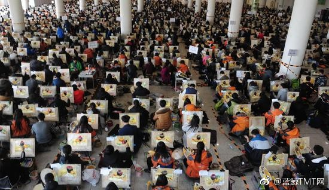
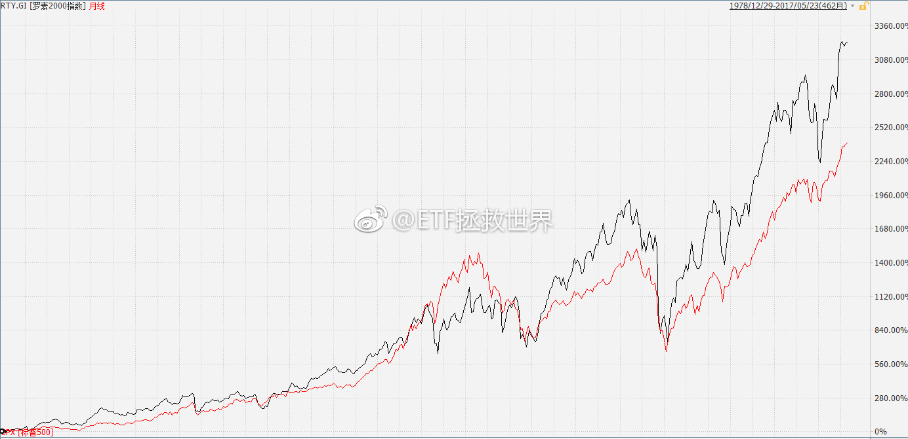

回复@悠哉主人76:这些我都清楚啊。北京过去十年的土地供应量就在我电脑的excel里。至于说全国人民的北京，据我所知东京也是日本极少的人口持续流入的城市。我只是说一个事实，没有表明自己的任何看法。房地产的事情，我不说，不代表很多东西我不知道。至于合理不合理，还是交给时间吧。我们都还不够老@蓝鲸TMT网:【美大学毕业月薪买6部iPhone7 中国一部买不起】6月15日讯，中国大学毕业生平均月工资不到4000元，不够买一部最便宜的iPhone7。相比之下，美大学毕业生月薪3950美元左右，可买6部32G版iPhone7，后者在美售价649美元。日本大学毕业生平均月薪1800美元，按美元计算是中国的3倍以上。(新浪财经) 
日本大学生毕业只有1800美元？我印象中东京人均年收入是30万啊。比较诡异的是，人均30万收入的东京，房价好像和北京差不多。日本卖房还是按照使用面积卖的。@蓝鲸TMT网:【美大学毕业月薪买6部iPhone7 中国一部买不起】6月15日讯，中国大学毕业生平均月工资不到4000元，不够买一部最便宜的iPhone7。相比之下，美大学毕业生月薪3950美元左右，可买6部32G版iPhone7，后者在美售价649美元。日本大学毕业生平均月薪1800美元，按美元计算是中国的3倍以上。(新浪财经)
其实行业值得关注的就那么几大类：消费（必要、可选）、医药、能源、信息、金融。面对不同的经济周期，可以在不同的行业上进行重点切换。包括大盘股、小盘股，在不同周期也有不同的表现。不要在品种上涨的时候吹得天花乱坠，也不要在什么品种跌的很多的时候再踩上几脚。锦上添花易，雪中送炭难。你如果能做到雪中送炭，某天那个品种发达了，就会给你意想不到的回报。
今天创业板（+1.8%），50（-0.6%）。大也好，小也好，我坚信没有不好的品种，只有不好的价格。“小股票不行了”就是扯淡。就像2013、2014年小股票走牛一年半后大股票纹丝不动一样，那时候的大股票也不是不行了，只是在等时机而已。@ETF拯救世界:有人说，注册制了，以后中小股票不行了。只有大蓝筹，白马会涨了。以后看见谁这样YY，可以自动取关。美国是注册制，纽交所和纳斯达克股票加起来超过6000只。下图是大盘股为主的标普500和中小股票组成的罗素2000走势。黑罗素，红标普。长期看，依然是中小指数涨的好。各位，中小股票跌的时候就把中小股票说的一无是处这种话，听都不要听。找到便宜的时候买进去就行了。人弃我取才是赚大钱的根本。切切。计划还没有介入小股票，不过已经开始进入中型指数了。别急，会买的。